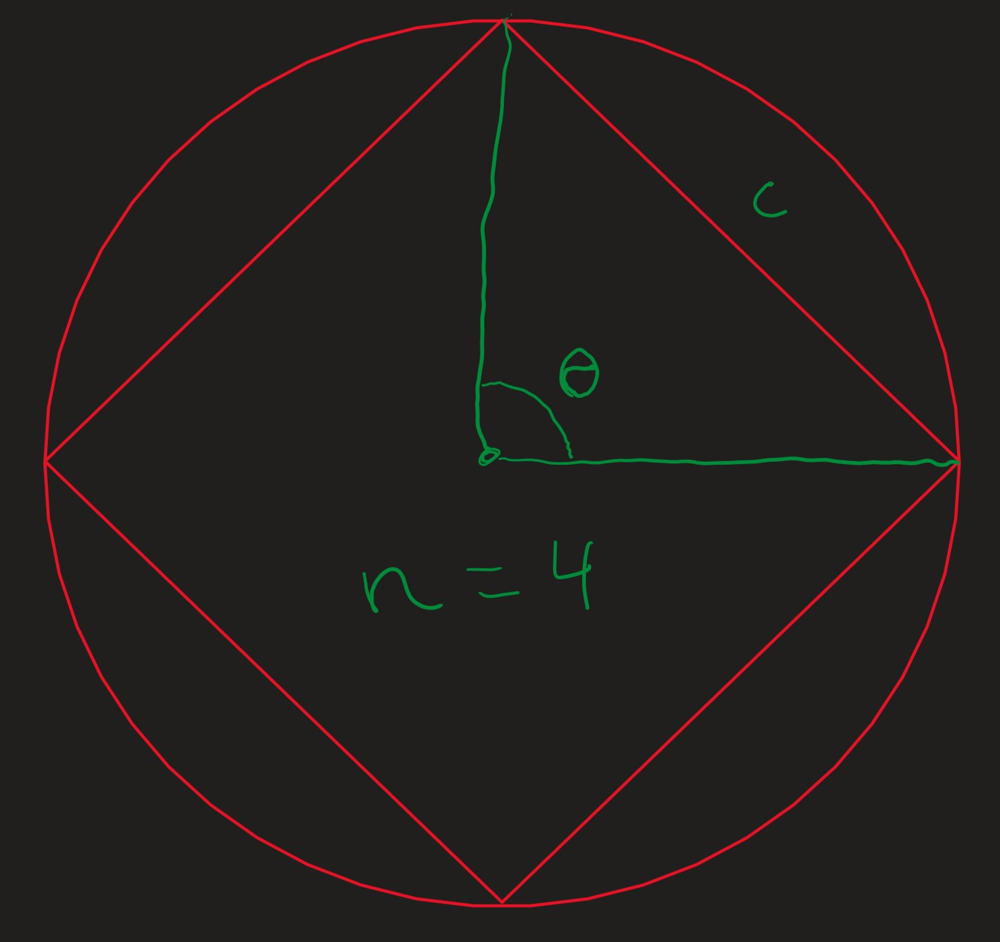

Approximating circles with triangles
15/07/2024So, recently I got a calculus book to study and on one of the exercises in the section of limits there was a guided exercice where they proved the formulas of the area of a circle by using limits and lots of triangles. I was very interested about the toppic, and so, I decided to do bit of research on the topic and I found out the following things about this problem. The thing that I want to do now I want to see what is the accuracy that they have when compared to the regular formulas of $2\pi r$ and $\pi r^2$.
Approximation of the perimeter
The first thing that we can do to approximate the perimeter is to calculate the length of the sides of the regular polygon. In this case, it is easier to look at them as chords. The most convenient formula to find the chord of a sphere is the following: $$ c=2r\sin\left(\frac{\theta}{2}\right)\tag{1}\label{chord} $$
Where $c$ is the chord, $r$ is the radius of the circle and $\theta$ is the angle of the triangle that forms this chord. We can say that $\theta$ is always: $$ \theta = \frac{2\pi}{n} \tag{2} \label{angle} $$ Where $n$ is the number of sides of the regular polygon. Here is a visualization to better see what is being calculated.
Then, we know that the perimeter of the polygon is: $$ p=cn\tag{3}\label{perimeterBySides} $$ Finally, we can substitute $c$ from and get: $$ p=2r\sin\left(\frac{\pi}{n}\right)n\tag{4}\label{apxPerimeter} $$ Whereas the true perimeter of the circle is: $$ P=2\pi r \tag{5}\label{realPerimeter} $$ With this we can see that the relation between the approximate value and the real value is: $$ \begin{align} C &= \frac{p}{P} \\ C &= \frac{2r\sin\left(\frac{\pi}{n}\right)n}{2r\pi} \\ C &= \frac{\sin\left(\frac{\pi}{n}\right)n}{\pi}\tag{6}\label{derivingC} \end{align} $$
From \ref{derivingC} we can see that the radius doesn't affect in the accuracy of this approximation. Another true supposition that we can make is that as we add more faces to the polygon the better it will approximate the real perimeter. Mathematically, we can express this as: $$ \lim_{n\to\infty} sin\left(\frac{\pi}{n}\right)n = \pi \tag{7}\label{limPi} $$
Which I think is really interesting. I also made a Desmos that gives the reader a better visualization of the accuracy of this approximation. Here is the link to the Desmos: link.
From the Desmos it can be seen that the accuracy increases in a logarithmic fashion, capping at 100% accuracy, and starting at about 82% with a triangle. Notice, that to get to 95% acc. you need a hexagon, and for 99%; 13 faces are needed, and if you want to get 99.99% acc. you will need 125 faces. Keep in mind this numbers, as they will prove interesting later.
Approximation of the Area
If we want to approximate the area, we must do the same thing that we did with the perimeter but using another formula. In this case, the most convenient one is: $$ \alpha=\frac{1}{2}r^2 \sin(\theta)\tag{8}\label{angleArea} $$ Where $\alpha$ is the area of one triangle of the polygon, the same triangle that has been seen here.
Again, to find the total area we will need to: $$ \begin{align} a &= \alpha n \\ a &= \frac{1}{2}r^2 \sin\left(\frac{2\pi}{n}\right)n \end{align} \tag{9}\label{aprxArea} $$ Then, if we compare this approximation with the real area, we get: $$ \begin{align} A&=\pi r^2 \\ C&=\frac{a}{A} \\ C&=\frac{1}{2}\frac{r^2\sin\left(\frac{2\pi}{n}\right)n}{\pi r^2} \\ C&=\frac{1}{2}\frac{\sin\left(\frac{2\pi}{n}\right)n}{\pi} \end{align} \tag{10}\label{comparisonArea} $$
If you notice the final equation of \ref{comparisonArea} is the half of \ref{derivingC}. Meaning that we need double the $n$ to get the same accuracy. Let's see if that's right. I made another Desmos to check this easily. Link is here. And if we look at the values we'll find that it holds. To get the same 95% accuracy we need now 12 faces, and instead of beginning with 82% acc. we begin with just 41% with a triangle. Now, to get that 99.99% acc. we need 250 faces!!
But... Why??
I think that the fun part of this exploration comes from eq. \ref{limPi}, so let's try calculating why is that the case. I'll re-write the equation again, for better readability. $$ \lim_{n\to\infty} sin\left(\frac{\pi}{n}\right)n = \pi \tag{11} \label{limToInfinity} $$ Well, basically as the denominator of the sinus gets bigger, the value of the $\sin$ gets smaller, however, this gets compensated by the n in the denominator. But, most importantly in small values of $n$ this doesn't hold true, that's why we need the limit.